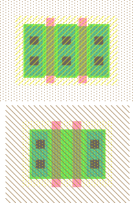

Мы сделали схему(schematic) и настало время сделать топологию (layout).
Используйте команду New Cell (в меню Cell) для вызова диалога создания новой ячейки.
Введите "nand2" как имя ячейки и "layout" для view.
Опишем отличия Компонентов схемы и примитивов топологии.
Технология по умолчанию "mocmos" (MOSIS CMOS), её можно выбрать в верхней части закладки Компонентов (Components tab).
Технология "mocmos" имеет много опций, таких как количество слоёв металла.
Что бы увидеть и изменить эту опцию используйте команду Preferences (в меню File),
и выберите закладку "Technology" из секции "Technology".
В секции "MOSIS CMOS" измените количество Metal layers(слоёв металла) на 6.
(Эти настройки сохраняться и при следующем запуске Electric.)
Дополнительную информацию о технологии MOSIS CMOS смотрите в Section 7-4-2.
 |
Ваша цель нарисовать топологию такую же как изображено на картинке.
Важно выбирать соответствующий стиль топологии при котором слои сцепляются вместе.
В этом проекте шины источника и земли расположены горизонтально в слое Metal-2 сверху и снизу ячейки.
Расстояние между шиной земли и источника 80 единиц от центра до центра.
Других элементов использующих слой Metal-2 нет и поэтому в этом слое разводят межсоединения ячеек.
Транзисторы nMOS располагаются в нижней половине ячейки а транзисторы pMOS располагаются вверху.
У каждой ячейки имеется минимум по одному контакту источника и подложки.
Экспорты(exports) входов и выходов используют слой Metal-1.
Вам может потребоваться видеть содержимое ваших вентилей.
Используйте команду Place Cell Instance (в меню Cell) и выберите "inv{lay}".
Затем кликнете в окне топологии для того чтобы разместить инвертор.
To view the contents of the inverter, highlight the inverter and use the One Level Down command
Для того чтобы увидеть из чего состоит инвертор, подсветите его и используйте команду One Level Down
(в меню Cell / Expand Cell Instances), или кликните на иконке "открытый глаз"("opened eye") на верхней панели инструментов.
Содержимое инвертора в действительности узел и не может редактироваться.
To extract the contents, so that the individual nodes and arcs are available for editing,
Для редактирования содержимого конкретного узла или дуги используйте команду
Extract Cell Instance (в меню Cell).
Эта команда просто создает копию ячейки инвертора в Вашей NAND ячейке.
Изучайте инвертор пока не поймёте назначение каждой его части.
|
|
Начните с рисования nMOS транзистора.
Транзистор nMOS формируется когда поликремний пересекается N-диффузионной областью.
N-diffusion изображается в Electric зелёным цветом,
Окружено N-select layer (Слой N типа - желтые точки) внутри P-well background (Карман P-типа - коричневые наклонные черты).
Этот набор уровней обычно используется для 3-х выходных транзисторных узлов в Electric.
Переместите мышку на закладку Компонентов с левой стороны экрана.
Когда курсор мыши находится над различными узлами их имена отображаются внизу в статусной строке.
Кликните на N-Transistor и ещё раз кликните в окне топологии для размещения транзистора.
Поверните транзистор, чтобы красный поликремневый затвор был ориентирован вертикально,
используйте команду 90 Degrees Counterclockwise (в меню Edit / Rotate), или просто нажмите Ctrl-J.
Теперь сделаем два nMOS транзистора для 2-х входового вентиля NAND, но мы должны скомпенсировать их ширину.
Сделайте двойной клик на транзисторе (или нажмите Ctrl-I).
В диалоге установок выставите ширину 12.
|  |
Нам необходимо два последовательных транзистора, сделайте копирование и вставку транзистора.
Так же возможно сделать дубликат для этого выделите объект и выполните команду Duplicate (в меню Edit) или нажмите Ctrl-M.
Поставьте два транзистора рядом.
Кликните на диффузии (source/drain) одного из транзисторов и сделайте правый клик на диффузии другого транзистора для их соединения.
Electric использует узлы и дуги на уровне топологии(IC layout) так же хорошо как на схемотехническом(schematics) уровне.
После соединения, составьте транзисторы вместе чтобы поликремневый затвор имел ширину 3 единицы (посмотрите как сделано ниже).
Для Вашего удобства включите сетку привязки (нажмите Ctrl-G).
Сетка по умолчанию это маленькие точки через каждую единицу и большие через 10 единиц.
Вы можете изменить сетку командой Preferences (в меню File, секции "Display", панель "Grid").
Измените "Frequency of bold dots" ("Частота толстых точек") на 7, так как в ячейки библиотеки шаг проводников равен 7.
Вы можете перемещать объект с помощью клавиш со стрелками на клавиатуре.
Дистанция перемещения по умолчанию 1 единица, но это можно изменить используя иконки "Full", "Half", и "Qtr" на панели инструментов
(или нажмите клавиши "f", "h", или "q" ).
Вы можете менять это в любое время.
Если Вы создадите структуру, которая имеет чётное количество единиц в размере, то её центр будет находиться на половине интервала.
(Для перемещения объекта на 7 единиц за клик, или, что эквивалентно большим точкам, нажмите Control и стрелку, нужную Вам,
Если Вы вначале нажмете "h" а затем стрелку то предмет переместиться только на половину дистанции - 3.5 единиц в нашем случае)
В Electric есть интерактивный design rule checker (DRC).
Если Вы пометите элементы слишком близко друг к другу, то в окне "Messages" выведется ошибка.
Попробуйте поставить два транзистора на расстоянии 2 единиц друг от друга.
Вы увидите ошибку DRC.
Верните транзисторы назад на установленную ширину.
Если Вы сомневаетесь то используйте команду Check Hierarchically для перепроверки.
(в меню Tool / DRC), или нажмите клавишу F5.
|
Далее создайте контакты для N-diffusion области в слое Metal-1.
Диффузионную(Diffusion) область мы будем называть "active".
Поместите узел Metal-1-N-Active-Contact в окне топологии, сделайте двойной клик и измените размер по Y на 12.
Вам необходим второй контакт с другого края последовательного набора nMOS транзисторов, создайте дубликат контакта (нажмите Ctrl-M).
Поместите контакты вблизи каждого края транзисторного набора и нарисуйте диффузионную линию чтобы соединить транзисторы.
Для быстрого соединения многих касающихся элементов используйте "auto router"(автоматический маршрутизатор).
Для этого, выберите все объекты для маршрутизирования(нажмите курсор мыши и заметите необходимые объекты в прямоугольник и отпустите клавишу мыши)
и используйте команду Auto-Stitch Highlighted Now (в меню Tool / Routing), или нажмите клавишу F2.
Дополнительную информацию о auto-stitching смотрите в Section 9-6-2.
Один контакт присоединён к транзистору; между металлом и поликремнием надо оставить промежуток только 1 единицу.
Используйте design rule checker(DRC-проверка правил проектирования) для выяснения где замыкание возможно но не сделано.
Аналогично создайте два параллельных транзистора pMOS и сделайте контакт между P-diffusion и Metal-1.
Теперь схема должна выглядеть на эту.
|  |
Нарисуйте проводники для соединения поликремневых вентилей, сформируйте входы "a" и "b", и выход "y" в слое Metal-1.
Добавьте в слое Metal-2 шины источника и земли.
Возможно создать проводники Metal-2, создав узел "Metal-2-Pin" и сделав клик правой клавишей мыши на проводнике.
Используйте сетку для точного размещения шин Metal-2 на расстоянии 80 единиц.
Это то же расстояние, что и для шин источник/земля в инверторе.
Если два объекта выбраны то в диалоге Properties (Ctrl-I) указана дистанция между ними.
Используя "Metal-1-Metal-2-Con", соединяют шины в слоях Metal-1 и Metal-2.
Выберите контакт и сделайте правый клик мышкой для соединения его с землёй.
Electric может автоматически создавать соединения.
Создайте необходимые соединения с источником и землей.
Сделайте отступы для источника и земли в 2 единицы около содержимого ячейки(встроенный карман), любой размер ячейки должен сцепляться
с содержимым ячейки разделённый промежутками в 4 единицы (удовлетворяет DRC)
Для карманных контактов требуется диодный переход между ячейкой и source/drain диффузией инверсного базиса.
Вам надо поместить N-карманный контакт и P-карманный контакт для каждой ячейки.
Часто удобнее поместить "Metal-1-N-Well-Con" около места назначения (около VDD), далее правый клик мыши на шине питания для создания связи.
Потом тащите контакт пока он не пересечётся с межсоединением, формируя N+ диффузионную область, Metal-1, Metal-1-Metal-2-Con, Metal-2.
Повторите это для P-кармана.
В нашем проекте мы соединяем вентили горизонтальными линиями слоя Metal-2.
Слой Metal-2 не подсоединён непосредственно к затвору поликремния.
Далее, надо добавить контакты от входного затвора поликремния к Metal-1.
Поместите узел "Metal-1-Polysilicon-1-Con" около левого поликремневого затвора.
Присоедините поликремний и тащите его через затвор.
Между контактами Metal-1 и выходом "y" должно быть расстояние в 3 единицы.
Добавьте короткое соединения Metal-1 возле контакта и клемму (landing pad).
Вы можете сделать соединение от контакта к поликремнию позже чем Metal-1.
Укажите Electric явно какой уровень Вам требуется, выберите дугу Metal-1 в закладке Компонентов (дуга имеет красную границу).
Теперь нарисуйте Ваш проводник.
Electric не придерживается особого мнения по поводу полярности карманов и подложки; поэтому генерирует как n- так p-карманные топологии (layers).
В нашем технологическом процессе используются p-подложки. P-карманы изображаются наклонными коричневыми линиями и на них можно не обращать внимание.
N-карманы обозначаются маленькими коричневыми точками, которые обозначают карманы на чипе.
Electric только генерирует достаточно карманов, которые окружают n и p диффузионные регионы на чипе.
(Electric создает карманные контакты шириной только 11 единиц!
Возможно возникнет DRC ошибка, но работать будет всё правильно.
Карманы должны быть 12 единиц ширины чтобы пройти DRC проверку).
Хорошая идея создать прямоугольный карман полностью покрывающий каждую ячейку, но когда речь идет о
нескольких ячейках Вы не должны оставлять пространство между карманами так как это ошибка.
Кликните на "Pure" внутри закладки Компоненты и выберите "N-Well-Node" или "P-Well-Node".
Измените размер, чтобы он полностью покрывал существующий карман,
используйте команду Interactively (в меню Edit / Size) или просто нажмите Ctrl-B.
Вам может потребоваться выбирать либо транзистор либо проводник, именно то что Вам надо.
Решение этой проблемы - использование команды Make Selected Hard (Сделать Выбор Трудным)
(в меню Edit / Selection) чтобы сделать узел hard-to-select.
Другой способ использования hard-to-select - включить режим "special select"("специальный выбор").
(Кликните на стрелку с буквами "SP" в меню инструментов).
Так же используйте команду Make Selected Easy (Сделать выбор Простым) если Вы хотите вернуть простой режим выбора.
У Electric есть команда Coverage Implants Generator (в меню Tool / Generation) которая автоматически создаёт
hard-to-select узлы (pure layer nodes) для N и P карманов.
Эта команда для близкой к простой геометрии в нутри ячейки.
Создание экспорта для ячейки.
Если Вы планируете использовать ячейку в другом проекте необходимы экспорты (exports) для определения мест через которые ячейка подключается к другой ячейке.
Кликните на окончании короткой входной линии Metal-1 которая находится слева от затвора и выберите узел Metal-1-Pin.
Если Вы случайно выбрали дугу Metal-1, кликните где нибудь для отмены выделения и попробуйте снова выделить нужный пин (pin).
Так же можно попробовать удерживать клавишу Control для перебора всех объектов находящихся под курсором.
Введите имя входа для экспорта "a" (нажмите Ctrl-E для вывода диалога "Экспорт").
Повторите то же для входа "b".
Экспортируйте выход "y" для металлической линии соединения транзисторов nMOS и pMOS.
Вы можете поместить дополнительный pin к выходной линии и экспортировать этот pin как "y".
Ещё экспортируйте "vdd" и "gnd" с дуги в слое Metal-2; они должны быть типа источник и земля, соответственно.
Electric воспринимает "vdd" и "gnd" как специальные имена, надо осторожно их использовать.